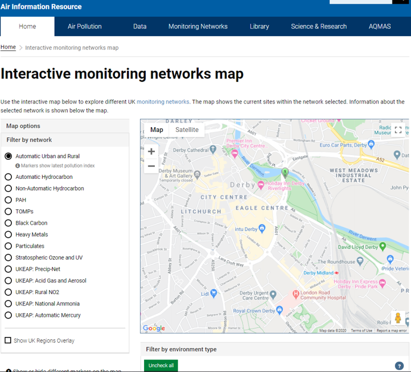

The DEFRA website for the air pollution network looks like:

The sole Derby sensor is located:
On the DEFRA website, you can only see a graph for the last 7 days of data, which is essentially useless. This is what led me to start this project:
The data can be downloaded as raw .csv files:

The raw data looks like below. This would be cumbersome to analyse in Excel, hence the creation of a Python project: